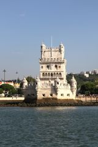

In 2018, cruises are planned on the Mediterranean, from Athens via Sicily, Sardinia, Balearic Islands, Gibraltar to Lisbon and later on the eastern side of the North Atlantic,
from Madeira through the Canary Islands to the Cape Verde Islands in the autumn of 2018 and winter of 2019. From February 23 to March 5, 2019, the Mindelo carnival on Cabo Verde.
In the second half of 2019, and exactly in November, the start of the ARC + regatta organized by the World Cruising Club is being planned.
The cruise starts from the Alimos marina in Athens in the second half of September and through the Saronic Gulf we head to the Corinthian Channel, then through the Corinthian Gulf to the Ionian Sea and stop at Zakynthos in
Agios Nikolaos.
Moving to Sicily, we flow past the famous cove Navagio Beach on the western side of Zakyntos. We sail to Etna and moor in the marina
Nettuno-Messina. A short jump through the Messinian strait and we moor in Tropeii in Calabria.
We start heading to Trapani on the west coast of Sicily, and from Palermo there are good air connections with Poland.
At the next leg of the cruise, we set off for Sardinia with a stop at Cagliari and a 380 Nm leap to the Balearic Islands and berth in
Palma de Mallorca. From Mallorca, we start to Ibiza and reach to Alicante. With Alicante there are good and cheap flights from Poland by Ryanair.
The next leg from Alicante via Malaga / Benalmadena and Gibraltar to Lisbon starts in the first half of October, and we plan to be in Lisbon on of October . At this stage, the first interesting place is of course Gibraltar.
The next port will be Cadiz, beautiful old town on a narrow peninsula surrounded by several marinas. Next we sail past impressive ones, cliffs
Algarve and Cave Benagil we're finishing up to Lagos. We are passing Cabo de Sao Vincente
and we sail north to Sines, headquarters of Don Vasco da Gama. From Sines we sail to Sesimbra from where we have 35 nm to Lisbon.
We sail towards the Bay of Lisbon, we pass Belem and after the bridge on April 25 we enter
Marina de Alcantara. Because Lisbon has very good flight connections with all of Europe, it is a great place to exchange crews,
as well as a great starting point for the entire Atlantic Ocean and the coast of Portugal to Cascais, north to
Ericeiry, whether Peniche or
Porto. Cruise on North Atlantic we will continue towards Madeira through the Canary Islands to the Cape Verde Islands during the autumn of 2022 and winter of 2023.
Go to the ATLANTIC folder!